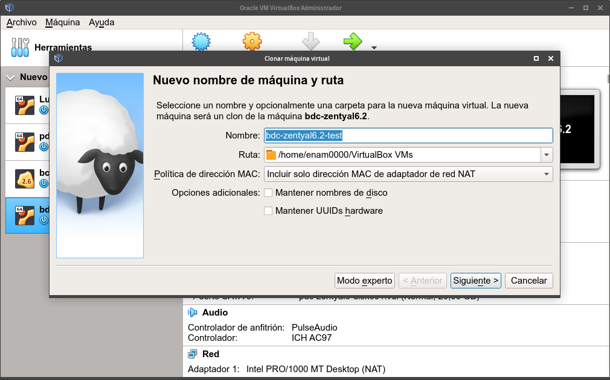
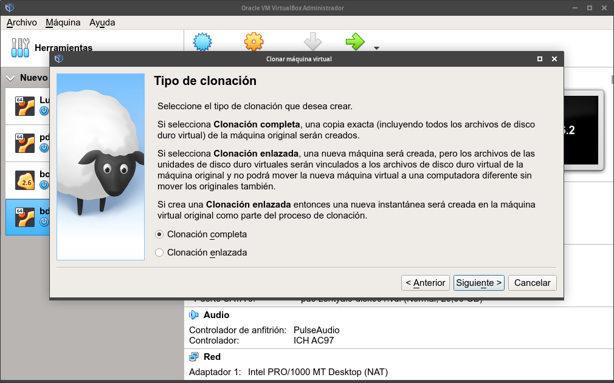
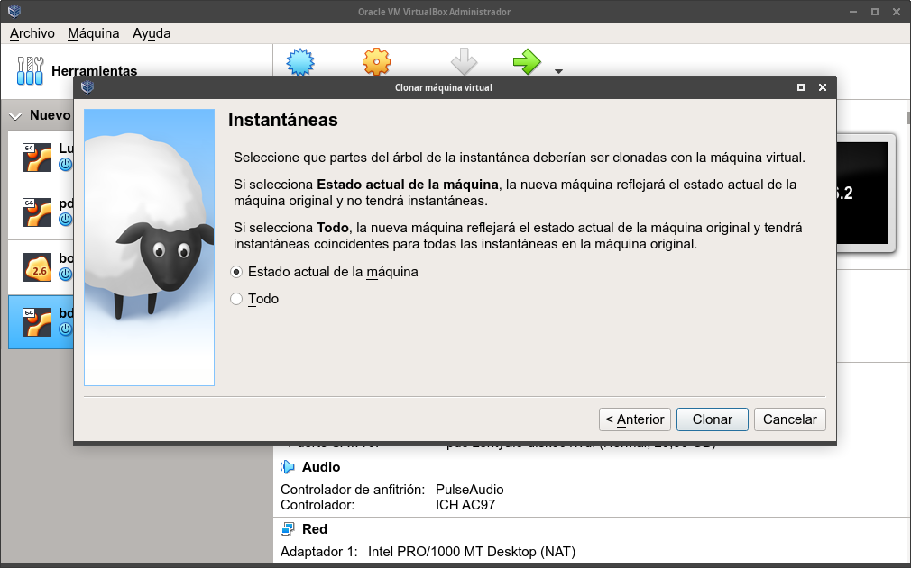

Procedimiento de clonación de una máquina virtual
La clonación nos permite crear una nueva máquina virtual a partir de otra y exactamente igual a la primera.
Para clonar una máquina virtual en VirtualBox, la máquina que queremos clonar debe encontrarse apagada.
Existen dos tipos de clonación:
- Completa: Cada vez que creamos una nueva máquina virtual, se crea una nueva carpeta dentro del directorio de máquinas virtuales donde se alojan todos los archivos de la máquina virtual. La opción de clonación completa copia todas las imágenes de disco dependientes a la nueva carpeta de la nueva máquina virtual. Al realizar una clonación completa, el clon puede funcionar completamente sin la máquina virtual de origen.
- Enlazada: Al utilizar la clonación enlazada, se crea una nueva máquina virtual, pero los discos virtuales de la máquina clon serán los de la máquina original. Ésto significa que la máquina virtual clon es dependiente de la máquina virtual original. Este tipo de clonación, se usa para disponer de escritorios virtuales, ya que ambas máquinas comparten los mismos discos duros.
Podemos clonar una máquina virtual:
- Desde la opción "Clonar" del menú de contexto que aparece al hacer clic con el botón derecho del ratón sobre la máquina virtual en el administrador de máquinas virtuales.
- Seleccionando la máquina virtual y haciendo clic en el menú "Máquina -> Clonar".
- Seleccionando la máquina virtual y pulsando la combinación de teclas "Ctrl+O".
- Seleccionando la máquina virtual, abriendo la opción de instantáneas y haciendo clic en el botón de clonar de la oveja.
Al hacer clic en "Clonar", iniciaremos un asistente de clonación:
Para poder elegir el modo de clonación (completa o enlazada), podemos entrar en "Modo experto", aunque más tarde, en el asistente, también nos preguntará.
Supongamos que nos interesa realizar un clon de la máquina virtual bdc-zentyal6.2 para realizar pruebas en ella. Podemos cambiar el nombre para el clon por bdc-zentyal6.2-test:

Dejamos el resto de opciones por defecto y hacemos clic en el botón "Siguiente".
El asistente nos pedirá que seleccionemos el tipo de clonación (completa o enlazada):

Como lo que nos interesa en estos momentos es realizar una clonación completa, dejamos seleccionada la opción por defecto y hacemos clic en el botón "Siguiente".
El siguiente paso que nos muestra el asistente es muy importante cuando en la máquina virtual original hemos creado instantáneas:

Este paso nos va a permitir:
- Clonar la máquina de manera que el clon tan sólo contenga el estado actual de la máquina original.
- Realizar una clonación que conserve todas las instantáneas.
Ésto puede ser muy útil para obtener clones en un estado concreto. Si estáis haciendo pruebas y habéis conseguido un estado en el que todo funciona y no hay problemas, podría ser interesante clonar en la instantánea en la que hemos conseguido el estado deseado.
En este ejemplo, hemos decidido clonar sólo el estado actual. Así que hacemos clic en el botón "Clonar" y comenzará el proceso de clonación.